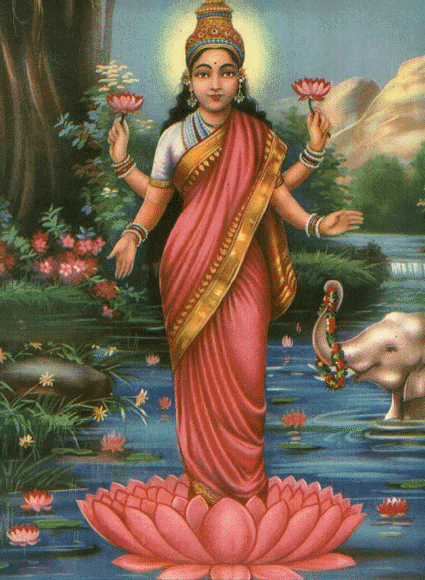

Lord Shiva
Goddess Lakshmi: The Goddess of Wealth and Prosperity
Symbolism and Attributes
Goddess Lakshmi, also known as Mahalakshmi, is one of the most widely revered deities in Hinduism. She embodies wealth, prosperity, fortune, and beauty, and is considered the divine consort of Lord Vishnu. Lakshmi is often depicted as a beautiful woman with a golden complexion, standing or sitting on a lotus flower, symbolizing purity and spiritual power. She is typically shown with four hands, representing the four goals of human life: dharma (righteousness), artha (prosperity), kama (desires), and moksha (liberation). Her hands usually hold lotus flowers, gold coins, and other symbols of abundance and good fortune.
Mythological Significance and Legends
Lakshmi's significance extends beyond her role as a provider of material wealth; she also symbolizes spiritual well-being and the flourishing of life itself. One of the most popular legends associated with Lakshmi is her emergence from the ocean of milk during the churning of the ocean (Samudra Manthan), a mythological event described in various Puranas. During this churning, Lakshmi rose from the ocean, bringing with her wealth and fortune. Her marriage to Vishnu is celebrated in many stories, emphasizing their harmonious relationship and Lakshmi's role in supporting Vishnu's work of maintaining cosmic order.
Worship and Festivals
Lakshmi is worshipped by devotees seeking prosperity, happiness, and success in their endeavors. One of the most significant festivals dedicated to her is Diwali, the festival of lights, during which Hindus perform Lakshmi Puja to invite the goddess into their homes and businesses to bless them with wealth and prosperity. The festival of Kojagiri Purnima, also known as Sharad Purnima, is another important occasion dedicated to Lakshmi. During these festivals, homes are cleaned and decorated with lamps, rangoli (decorative patterns), and flowers to welcome the goddess. Devotees also chant hymns, recite prayers, and offer sweets and fruits to Lakshmi to invoke her blessings.